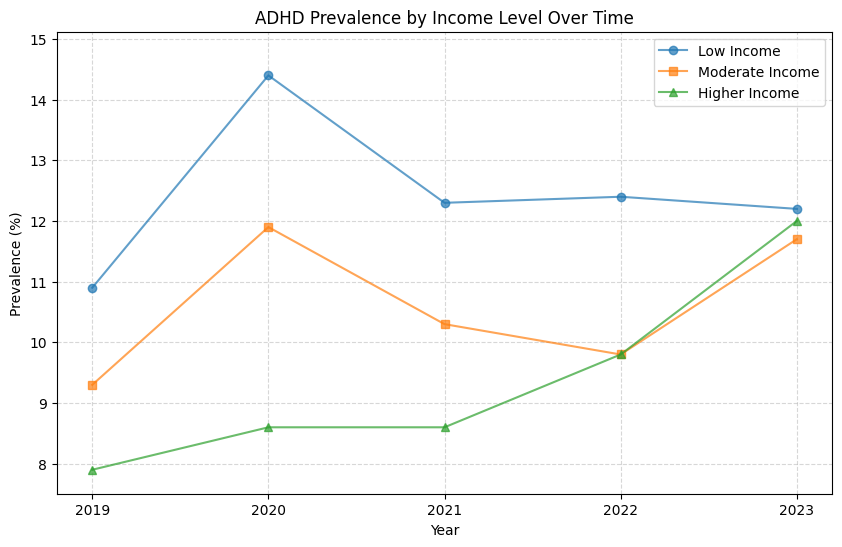

hyperlink to your webpage at github.io https://github.com/stellacwxxvi/stellacwxxvi.github.io/tree/main
!git clone https://github.com/HHS-NHIS/SHS_TABLES_CHILDREN.gitCloning into 'SHS_TABLES_CHILDREN'...
remote: Enumerating objects: 1893, done.ote: Counting objects: 100% (1772/1772), done.ote: Compressing objects: 100% (400/400), done.ote: Total 1893 (delta 1601), reused 1540 (delta 1372), pack-reused 121 (from 1)%%shell
jupyter nbconvert --to html final_tutorial_wright.ipynb[NbConvertApp] WARNING | pattern 'final_tutorial_wright.ipynb' matched no files
This application is used to convert notebook files (*.ipynb)
to various other formats.
WARNING: THE COMMANDLINE INTERFACE MAY CHANGE IN FUTURE RELEASES.
Options
=======
The options below are convenience aliases to configurable class-options,
as listed in the "Equivalent to" description-line of the aliases.
To see all configurable class-options for some <cmd>, use:
<cmd> --help-all
--debug
set log level to logging.DEBUG (maximize logging output)
Equivalent to: [--Application.log_level=10]
--show-config
Show the application's configuration (human-readable format)
Equivalent to: [--Application.show_config=True]
--show-config-json
Show the application's configuration (json format)
Equivalent to: [--Application.show_config_json=True]
--generate-config
generate default config file
Equivalent to: [--JupyterApp.generate_config=True]
-y
Answer yes to any questions instead of prompting.
Equivalent to: [--JupyterApp.answer_yes=True]
--execute
Execute the notebook prior to export.
Equivalent to: [--ExecutePreprocessor.enabled=True]
--allow-errors
Continue notebook execution even if one of the cells throws an error and include the error message in the cell output (the default behaviour is to abort conversion). This flag is only relevant if '--execute' was specified, too.
Equivalent to: [--ExecutePreprocessor.allow_errors=True]
--stdin
read a single notebook file from stdin. Write the resulting notebook with default basename 'notebook.*'
Equivalent to: [--NbConvertApp.from_stdin=True]
--stdout
Write notebook output to stdout instead of files.
Equivalent to: [--NbConvertApp.writer_class=StdoutWriter]
--inplace
Run nbconvert in place, overwriting the existing notebook (only
relevant when converting to notebook format)
Equivalent to: [--NbConvertApp.use_output_suffix=False --NbConvertApp.export_format=notebook --FilesWriter.build_directory=]
--clear-output
Clear output of current file and save in place,
overwriting the existing notebook.
Equivalent to: [--NbConvertApp.use_output_suffix=False --NbConvertApp.export_format=notebook --FilesWriter.build_directory= --ClearOutputPreprocessor.enabled=True]
--coalesce-streams
Coalesce consecutive stdout and stderr outputs into one stream (within each cell).
Equivalent to: [--NbConvertApp.use_output_suffix=False --NbConvertApp.export_format=notebook --FilesWriter.build_directory= --CoalesceStreamsPreprocessor.enabled=True]
--no-prompt
Exclude input and output prompts from converted document.
Equivalent to: [--TemplateExporter.exclude_input_prompt=True --TemplateExporter.exclude_output_prompt=True]
--no-input
Exclude input cells and output prompts from converted document.
This mode is ideal for generating code-free reports.
Equivalent to: [--TemplateExporter.exclude_output_prompt=True --TemplateExporter.exclude_input=True --TemplateExporter.exclude_input_prompt=True]
--allow-chromium-download
Whether to allow downloading chromium if no suitable version is found on the system.
Equivalent to: [--WebPDFExporter.allow_chromium_download=True]
--disable-chromium-sandbox
Disable chromium security sandbox when converting to PDF..
Equivalent to: [--WebPDFExporter.disable_sandbox=True]
--show-input
Shows code input. This flag is only useful for dejavu users.
Equivalent to: [--TemplateExporter.exclude_input=False]
--embed-images
Embed the images as base64 dataurls in the output. This flag is only useful for the HTML/WebPDF/Slides exports.
Equivalent to: [--HTMLExporter.embed_images=True]
--sanitize-html
Whether the HTML in Markdown cells and cell outputs should be sanitized..
Equivalent to: [--HTMLExporter.sanitize_html=True]
--log-level=<Enum>
Set the log level by value or name.
Choices: any of [0, 10, 20, 30, 40, 50, 'DEBUG', 'INFO', 'WARN', 'ERROR', 'CRITICAL']
Default: 30
Equivalent to: [--Application.log_level]
--config=<Unicode>
Full path of a config file.
Default: ''
Equivalent to: [--JupyterApp.config_file]
--to=<Unicode>
The export format to be used, either one of the built-in formats
['asciidoc', 'custom', 'html', 'latex', 'markdown', 'notebook', 'pdf', 'python', 'qtpdf', 'qtpng', 'rst', 'script', 'slides', 'webpdf']
or a dotted object name that represents the import path for an
``Exporter`` class
Default: ''
Equivalent to: [--NbConvertApp.export_format]
--template=<Unicode>
Name of the template to use
Default: ''
Equivalent to: [--TemplateExporter.template_name]
--template-file=<Unicode>
Name of the template file to use
Default: None
Equivalent to: [--TemplateExporter.template_file]
--theme=<Unicode>
Template specific theme(e.g. the name of a JupyterLab CSS theme distributed
as prebuilt extension for the lab template)
Default: 'light'
Equivalent to: [--HTMLExporter.theme]
--sanitize_html=<Bool>
Whether the HTML in Markdown cells and cell outputs should be sanitized.This
should be set to True by nbviewer or similar tools.
Default: False
Equivalent to: [--HTMLExporter.sanitize_html]
--writer=<DottedObjectName>
Writer class used to write the
results of the conversion
Default: 'FilesWriter'
Equivalent to: [--NbConvertApp.writer_class]
--post=<DottedOrNone>
PostProcessor class used to write the
results of the conversion
Default: ''
Equivalent to: [--NbConvertApp.postprocessor_class]
--output=<Unicode>
Overwrite base name use for output files.
Supports pattern replacements '{notebook_name}'.
Default: '{notebook_name}'
Equivalent to: [--NbConvertApp.output_base]
--output-dir=<Unicode>
Directory to write output(s) to. Defaults
to output to the directory of each notebook. To recover
previous default behaviour (outputting to the current
working directory) use . as the flag value.
Default: ''
Equivalent to: [--FilesWriter.build_directory]
--reveal-prefix=<Unicode>
The URL prefix for reveal.js (version 3.x).
This defaults to the reveal CDN, but can be any url pointing to a copy
of reveal.js.
For speaker notes to work, this must be a relative path to a local
copy of reveal.js: e.g., "reveal.js".
If a relative path is given, it must be a subdirectory of the
current directory (from which the server is run).
See the usage documentation
(https://nbconvert.readthedocs.io/en/latest/usage.html#reveal-js-html-slideshow)
for more details.
Default: ''
Equivalent to: [--SlidesExporter.reveal_url_prefix]
--nbformat=<Enum>
The nbformat version to write.
Use this to downgrade notebooks.
Choices: any of [1, 2, 3, 4]
Default: 4
Equivalent to: [--NotebookExporter.nbformat_version]
Examples
--------
The simplest way to use nbconvert is
> jupyter nbconvert mynotebook.ipynb --to html
Options include ['asciidoc', 'custom', 'html', 'latex', 'markdown', 'notebook', 'pdf', 'python', 'qtpdf', 'qtpng', 'rst', 'script', 'slides', 'webpdf'].
> jupyter nbconvert --to latex mynotebook.ipynb
Both HTML and LaTeX support multiple output templates. LaTeX includes
'base', 'article' and 'report'. HTML includes 'basic', 'lab' and
'classic'. You can specify the flavor of the format used.
> jupyter nbconvert --to html --template lab mynotebook.ipynb
You can also pipe the output to stdout, rather than a file
> jupyter nbconvert mynotebook.ipynb --stdout
PDF is generated via latex
> jupyter nbconvert mynotebook.ipynb --to pdf
You can get (and serve) a Reveal.js-powered slideshow
> jupyter nbconvert myslides.ipynb --to slides --post serve
Multiple notebooks can be given at the command line in a couple of
different ways:
> jupyter nbconvert notebook*.ipynb
> jupyter nbconvert notebook1.ipynb notebook2.ipynb
or you can specify the notebooks list in a config file, containing::
c.NbConvertApp.notebooks = ["my_notebook.ipynb"]
> jupyter nbconvert --config mycfg.py
To see all available configurables, use `--help-all`.
---------------------------------------------------------------------------
CalledProcessError Traceback (most recent call last)
<ipython-input-2-4ea169494718> in <cell line: 0>()
----> 1 get_ipython().run_cell_magic('shell', '', 'jupyter nbconvert --to html final_tutorial_wright.ipynb\n')
/usr/local/lib/python3.11/dist-packages/google/colab/_shell.py in run_cell_magic(self, magic_name, line, cell)
356 if line and not cell:
357 cell = ' '
--> 358 return super().run_cell_magic(magic_name, line, cell)
359
360
/usr/local/lib/python3.11/dist-packages/IPython/core/interactiveshell.py in run_cell_magic(self, magic_name, line, cell)
2471 with self.builtin_trap:
2472 args = (magic_arg_s, cell)
-> 2473 result = fn(*args, **kwargs)
2474 return result
2475
/usr/local/lib/python3.11/dist-packages/google/colab/_system_commands.py in _shell_cell_magic(args, cmd)
110 result = _run_command(cmd, clear_streamed_output=False)
111 if not parsed_args.ignore_errors:
--> 112 result.check_returncode()
113 return result
114
/usr/local/lib/python3.11/dist-packages/google/colab/_system_commands.py in check_returncode(self)
135 def check_returncode(self):
136 if self.returncode:
--> 137 raise subprocess.CalledProcessError(
138 returncode=self.returncode, cmd=self.args, output=self.output
139 )
CalledProcessError: Command 'jupyter nbconvert --to html final_tutorial_wright.ipynb
' returned non-zero exit status 255.
I, Stella Wright, will investigate a data set related to learning disability diagnoses in young females. I aim to develop substantial evidence on the significant differences in diagnoses between males and females while also considering factors such as socioeconomic status and poverty level. So far, I plan on fully diving into 2024-2022 National Health Interview Survey. The website in which the analysis is located can be found here.
I am taking this class as a graduate student and will complete this project independently. To stay on track, I will dedicate time to this project on a weekly basis. I will seek assistance from my professor, Dr. Saad Hassan, and my graduate assistant, Amin Mir Fakhar, as needed. I will use Google Calendar as my planner, Google Colab as my main coding space, and a GitHub repository to store my code.
The first table is derived from the CDC's 2023-2019 National Health Interview Survey. This national organization has a GitHub page that allows users to analyze their data easily. I have chosen to focus on learning disabilities and ADHD in the children's section of the survey. This choice is primarily due to the prevalence of diagnoses among young individuals and the lack of questions about learning disabilities in adults.
In this table, the question asked is: "Has a doctor or other health professional ever told you that [child's name] had attention deficit hyperactivity disorder (ADHD) or attention deficit disorder (ADD)?" The data reflects the percentage of "Yes" responses out of the total possible responses, which include "Yes," "No," "Refuse to Answer," and "Do not Know."
The observations presented in the rows are categorized by year and include valuable measurements of the prevalence of ADHD based on income levels. I selected this dataset because it offers a wealth of data points and variables that may be relevant to the research question: "Do children in lower-income families have a higher diagnosis rate?" Furthermore, additional analysis will help address similar questions about race, gender, and learning disabilities in general.
Moreover, this source is reputable and trustworthy, as the U.S. Centers for Disease Control and Prevention provides it. However, I recognize that the variables included in the dataset may carry some inherent bias. I aim to minimize bias as much as possible and will maintain objectivity in my research despite this personally relevant issue.
import json
import pandas as pd
# Load JSON file
file_path = "EVER_ADHD__ind__poverty__.json"
with open(file_path, "r") as f:
json_data = json.load(f)
# Extract column names and data
columns = json_data["classes"] # Column names
data = json_data["data"] # Actual data
# Create DataFrame
df = pd.DataFrame(data, columns=columns)
# Display DataFrame
from IPython.display import display
display(df) # Shows table output in Colab| Year | row_var | rowLevels | rowLevNum | selected | stat_group | col_group | new_caption | new_caption2 | Less than 100% FPL__povertyA__EVER_ADHD__coef | Less than 100% FPL__povertyA__EVER_ADHD__se | 100% to less than 200% FPL__povertyB__EVER_ADHD__coef | 100% to less than 200% FPL__povertyB__EVER_ADHD__se | 200% and greater FPL__povertyC__EVER_ADHD__coef | 200% and greater FPL__povertyC__EVER_ADHD__se | subLevels | |
|---|---|---|---|---|---|---|---|---|---|---|---|---|---|---|---|---|
| 0 | 2019 | ind | 2019 | indA | 0 | Health status | Socio-economic status | Based on the question "Has a doctor or other h... | 10.9 | 8.8 ,13.3 | 9.3 | 7.8 ,11.0 | 7.9 | 7.1 ,8.9 | ||
| 1 | 2020 | ind | 2020 | indA | 0 | Health status | Socio-economic status | Based on the question "Has a doctor or other h... | 14.4 | 10.7, 18.7 | 11.9 | 9.6, 14.6 | 8.6 | 7.5, 9.8 | ||
| 2 | 2021 | ind | 2021 | indA | 0 | Health status | Socio-economic status | Based on the question "Has a doctor or other h... | 12.3 | 9.8, 15.1 | 10.3 | 8.6, 12.2 | 8.6 | 7.7, 9.5 | ||
| 3 | 2022 | ind | 2022 | indA | 0 | Health status | Socio-economic status | Based on the question "Has a doctor or other h... | 12.4 | 9.8, 15.4 | 9.8 | 8.0, 11.8 | 9.8 | 8.8, 10.8 | ||
| 4 | 2023 | ind | 2023 | indA | 0 | Health status | Socio-economic status | Based on the question "Has a doctor or other h... | 12.2 | 9.7, 15.1 | 11.7 | 9.9, 13.8 | 12.0 | 10.9, 13.2 |
Now, I will drop unneeded columns.
df = df.drop(columns=["row_var", "rowLevels", "rowLevNum", "selected", "stat_group", "col_group", "new_caption", "new_caption2", "subLevels"], errors='ignore')
display(df)| Year | Less than 100% FPL__povertyA__EVER_ADHD__coef | Less than 100% FPL__povertyA__EVER_ADHD__se | 100% to less than 200% FPL__povertyB__EVER_ADHD__coef | 100% to less than 200% FPL__povertyB__EVER_ADHD__se | 200% and greater FPL__povertyC__EVER_ADHD__coef | 200% and greater FPL__povertyC__EVER_ADHD__se | |
|---|---|---|---|---|---|---|---|
| 0 | 2019 | 10.9 | 8.8 ,13.3 | 9.3 | 7.8 ,11.0 | 7.9 | 7.1 ,8.9 |
| 1 | 2020 | 14.4 | 10.7, 18.7 | 11.9 | 9.6, 14.6 | 8.6 | 7.5, 9.8 |
| 2 | 2021 | 12.3 | 9.8, 15.1 | 10.3 | 8.6, 12.2 | 8.6 | 7.7, 9.5 |
| 3 | 2022 | 12.4 | 9.8, 15.4 | 9.8 | 8.0, 11.8 | 9.8 | 8.8, 10.8 |
| 4 | 2023 | 12.2 | 9.7, 15.1 | 11.7 | 9.9, 13.8 | 12.0 | 10.9, 13.2 |
###Rename Columns
To fully understand the data in this section, a couple of definitions need to be established.
FPL: Federal Poverty Level
Lower Income: Less than 100% of the FPL
Moderate Income: 100% to less than 200% of the FPL
Higher Income: 200% and more significant than the FPL
For each income level, there are two sections: one detailing the prevalence of positive diagnoses (responses of "yes" to the relevant question) and the other providing the confidence interval for the given prevalence. A confidence interval (CI) is a range of values used to estimate the actual value.
For example, the estimated prevalence of positive diagnoses in the Low-Income group for 2019 is 10.9%. However, the true prevalence could lie between 8.8% and 13.3%.
df = df.rename(columns={
"Less than 100% FPL__povertyA__EVER_ADHD__coef": "Low Income Group Prevalence",
"Less than 100% FPL__povertyA__EVER_ADHD__se": "Low Income Group CI",
"100% to less than 200% FPL__povertyB__EVER_ADHD__coef": "Moderate Income Group Prevalence",
"100% to less than 200% FPL__povertyB__EVER_ADHD__se": "Moderate Income Group CI",
"200% and greater FPL__povertyC__EVER_ADHD__coef": "Higher Income Group Prevalence",
"200% and greater FPL__povertyC__EVER_ADHD__se": "Higher Income Group CI"
})
display(df)| Year | Low Income Group Prevalence | Low Income Group CI | Moderate Income Group Prevalence | Moderate Income Group CI | Higher Income Group Prevalence | Higher Income Group CI | |
|---|---|---|---|---|---|---|---|
| 0 | 2019 | 10.9 | 8.8 ,13.3 | 9.3 | 7.8 ,11.0 | 7.9 | 7.1 ,8.9 |
| 1 | 2020 | 14.4 | 10.7, 18.7 | 11.9 | 9.6, 14.6 | 8.6 | 7.5, 9.8 |
| 2 | 2021 | 12.3 | 9.8, 15.1 | 10.3 | 8.6, 12.2 | 8.6 | 7.7, 9.5 |
| 3 | 2022 | 12.4 | 9.8, 15.4 | 9.8 | 8.0, 11.8 | 9.8 | 8.8, 10.8 |
| 4 | 2023 | 12.2 | 9.7, 15.1 | 11.7 | 9.9, 13.8 | 12.0 | 10.9, 13.2 |
Check dtypes
print(df.dtypes)Year object
Low Income Group Prevalence object
Low Income Group CI object
Moderate Income Group Prevalence object
Moderate Income Group CI object
Higher Income Group Prevalence object
Higher Income Group CI object
dtype: object
Checking the dtypes, we find that some columns are not properly formatted. While Confidence Intergale ranges and the Year are fine to stay as object, we must change the Prevalence rate to a numeric dtype.
columns_to_convert = [
"Low Income Group Prevalence",
"Moderate Income Group Prevalence",
"Higher Income Group Prevalence"
]
df[columns_to_convert] = df[columns_to_convert].apply(pd.to_numeric, errors='coerce')
print(df.dtypes)Year object
Low Income Group Prevalence float64
Low Income Group CI object
Moderate Income Group Prevalence float64
Moderate Income Group CI object
Higher Income Group Prevalence float64
Higher Income Group CI object
dtype: object
Final Display of Table #1
display(df)| Year | Low Income Group Prevalence | Low Income Group CI | Moderate Income Group Prevalence | Moderate Income Group CI | Higher Income Group Prevalence | Higher Income Group CI | |
|---|---|---|---|---|---|---|---|
| 0 | 2019 | 10.9 | 8.8 ,13.3 | 9.3 | 7.8 ,11.0 | 7.9 | 7.1 ,8.9 |
| 1 | 2020 | 14.4 | 10.7, 18.7 | 11.9 | 9.6, 14.6 | 8.6 | 7.5, 9.8 |
| 2 | 2021 | 12.3 | 9.8, 15.1 | 10.3 | 8.6, 12.2 | 8.6 | 7.7, 9.5 |
| 3 | 2022 | 12.4 | 9.8, 15.4 | 9.8 | 8.0, 11.8 | 9.8 | 8.8, 10.8 |
| 4 | 2023 | 12.2 | 9.7, 15.1 | 11.7 | 9.9, 13.8 | 12.0 | 10.9, 13.2 |
##Tables #2 - #6 A further explanation of my research will be similar to the table presented above. I plan to expand my analysis to include variables such as race and gender. Additionally, I will create displays using the same variables—income level, gender, and race—with the data provided by the CDC on learning disabilities in general.
##Exploratory Data Analysis (EDA)
import matplotlib.pyplot as plt
years = df['Year']
low_income_prevalence = df['Low Income Group Prevalence']
moderate_income_prevalence = df['Moderate Income Group Prevalence']
higher_income_prevalence = df['Higher Income Group Prevalence']
plt.figure(figsize=(10, 6)) # Adjust figure size as needed
# Plot each income group as a separate line with reduced transparency
plt.plot(years, low_income_prevalence, marker='o', linestyle='-', alpha=0.7, label='Low Income')
plt.plot(years, moderate_income_prevalence, marker='s', linestyle='-', alpha=0.7, label='Moderate Income')
plt.plot(years, higher_income_prevalence, marker='^', linestyle='-', alpha=0.7, label='Higher Income')
plt.ylim(min(low_income_prevalence.min(), moderate_income_prevalence.min(), higher_income_prevalence.min()) * 0.95,
max(low_income_prevalence.max(), moderate_income_prevalence.max(), higher_income_prevalence.max()) * 1.05)
# Customize the plot
plt.xlabel('Year')
plt.ylabel('Prevalence (%)')
plt.title('ADHD Prevalence by Income Level Over Time')
plt.legend()
plt.grid(True, linestyle='--', alpha=0.5) # Lighten the grid
plt.show()
In analyzing ADHD diagnosis rates across different income levels, I initially hypothesized that children from higher-income families would have higher diagnosis rates due to greater access to diagnosis resources. However, my findings contradict this assumption and reveal surprising trends. Children from lower-income families have the highest diagnosis rates, while those from higher-income families have the lowest. This trend remains consistent, except in 2022 and 2023 when the rates became more similar.
This observation is interesting because it suggests that accessibility to diagnosis is not solely determined by wealth; it may also be influenced by community and government resources available to lower-income families. The diagnosis rates for ADHD peaked in 2020 for both moderate- and low-income families. A potential explanation for this spike is that during the COVID-19 pandemic, online learning made ADHD symptoms more noticeable to parents, leading to an increase in diagnoses.
This finding highlights how external factors, such as major societal disruptions, can influence medical diagnoses. Over time, diagnosis rates across income groups have become more similar. By 2022, the rates for moderate- and high-income families were identical. By 2023, all income brackets fell within a 5% range of each other. This trend is significant; it may suggest greater awareness of ADHD across all income levels or improved access to diagnoses for previously underdiagnosed groups.
Government and community programs might contribute to the higher diagnosis rates observed in lower-income families. Since these families consistently have higher rates of diagnosis, free or subsidized diagnostic services may play a key role. This challenges the assumption that higher-income families always have the best healthcare access.